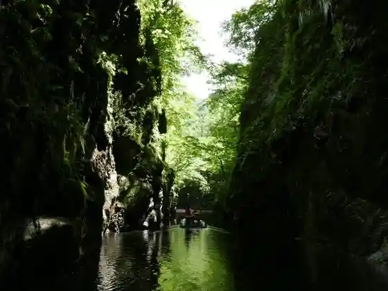
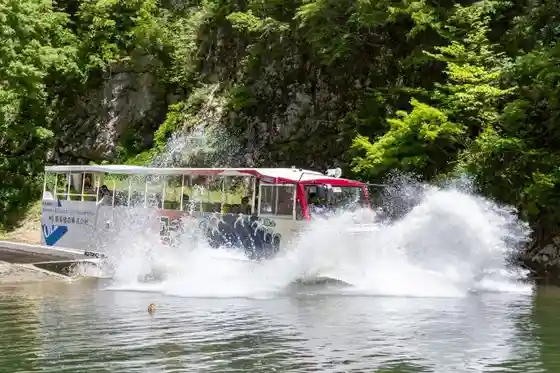
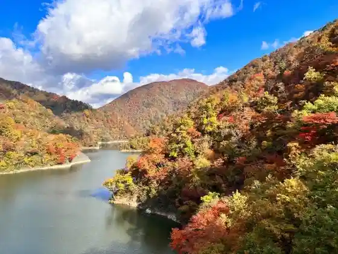
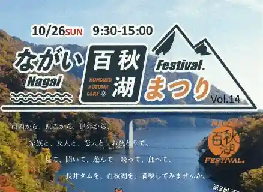

Zekkei Mibuchi Keikoku Tori Nuke Sanpai
Nagai, Yamagata · 0238-87-0605 · Official / source link

Suiriku Ryoyo Basu in Nagai Hyaku Aki Mizumi
Nagai, Yamagata · 090-9534-6004 · Official / source link

Nagai Dam / Nagai Hyaku Aki Mizumi
Nagai, Yamagata · 0238-88-5279 · Official / source link

Nagai Hyaku Aki Mizumi Festival
Nagai, Yamagata · 0238-82-8005 · Official / source link

Nagai Ayame Festival
Nagai, Yamagata · 0238-88-5279 · Official / source link
Roadside Station (Kawa no Minato Nagai)
Nagai, Yamagata · 0238-87-1121 · Official / source link
Nagai Ayame Park
Nagai, Yamagata · 0238-84-2111 · Official / source link
Nagai Yuki Akari Kairo Festival
Nagai, Yamagata · 0238-88-5279 · Official / source link
Nagai Ayame Onsen (Nyu Sakurayu)
Nagai, Yamagata · 0238-88-7280 · Official / source link
Nagai Eki
Nagai, Yamagata · 0238-88-2002 · Official / source link
Kurunto
Nagai, Yamagata · 0238-87-3260 · Official / source link
U no Hana Onsen Hagi no Yu
Nagai, Yamagata · 0238-84-1387 · Official / source link
Shiro Tsutsuji Festival
Nagai, Yamagata · 0238-88-5279 · Official / source link
So Miya Shrine
Nagai, Yamagata · 0238-88-3348 · Official / source link
Nogawa Manabi Kan
Nagai, Yamagata · 0238-87-0605 · Official / source link
Roadside Station Kawa no Minato Nagai Nai
Nagai, Yamagata · 090-5497-5147 · Official / source link
Kodai no Oka
Nagai, Yamagata · 0238-88-9978 · Official / source link
Nagai Hyaku Aki Mizumi Yuransen
Nagai, Yamagata · 090-9534-6004 · Official / source link
Dosho Teradaira Ski Area
Nagai, Yamagata · 0238-88-1187 · Official / source link
Yamagatamorimori Forest
Nagai, Yamagata · Official / source link
Isazawa no Kubo Zakura
Nagai, Yamagata · 0238-88-5279 · Official / source link
Kyu Nagai Shogakko Daiichi Kosha
Nagai, Yamagata · 0238-87-1802 · Official / source link
Ko Dai Shrine
Nagai, Yamagata · 0238-88-2354 · Official / source link
Nagai Dam De (Yamagata Banjii)
Nagai, Yamagata · 0238-88-1831 · Official / source link
Nagai Dam SUP Experience Suijo Jitensha Experience
Nagai, Yamagata · 0238-88-1831 · Official / source link
Ken Tama Hiroba SPIKe
Nagai, Yamagata · 0238-82-8017 · Official / source link
Shuku Kame Yama City Tami Tozan
Nagai, Yamagata · 080-5384-2575 · Official / source link
Nagai Pionii Forest
Nagai, Yamagata · 0238-87-4810 · Official / source link
Kodai no Oka Jomon Campground
Nagai, Yamagata · 0238-88-9978 · Official / source link
Saijo Kawa Teibo Sembonzakura
Nagai, Yamagata · 0238-88-5279 · Official / source link
Kusaoka no Daimyojin Zakura
Nagai, Yamagata · 0238-88-5279 · Official / source link
Kyu Marudai Ogiya (Bunkyo no Mori)
Nagai, Yamagata · 0238-88-4151 · Official / source link
Hagi En
Nagai, Yamagata · 0238-84-1387 · Official / source link
Nagai Oitama Shogaigakushu Plaza
Nagai, Yamagata · 0238-84-6900 · Official / source link
Ishibuchi Bagiicharenji
Nagai, Yamagata · 0238-87-0605 · Official / source link
Yamaichi Shoyu Mise
Nagai, Yamagata · 0238-88-2068 · Official / source link
Sangaitaki (Fudo Taki) (Nagai)
Nagai, Yamagata · 0238-88-5279 · Official / source link
Kyu Koike Iin
Nagai, Yamagata · 0238-88-5279 · Official / source link
Jomon Festival
Nagai, Yamagata · 0238-84-7677 · Official / source link
Kogei Sha Shishi Yado / Shishi Yado Kun Tei
Nagai, Yamagata · 0238-84-1143 · Official / source link
Saijo Kawa Byupointo (Saijo Kawa Hassho no Chi)
Nagai, Yamagata · 0238-88-5279 · Official / source link
Shiro Tsutsuji Park (Matsugaike Park)
Nagai, Yamagata · 0238-88-5279 · Official / source link
Ishibuchidomburako
Nagai, Yamagata · 0238-87-0605 · Official / source link
Hayama Shrine
Nagai, Yamagata · 0238-88-2117 · Official / source link
Sesshu In
Nagai, Yamagata · 0238-88-4846 · Official / source link
Kuwajima Memorial Museum (Kyu Kuwajima Gankai In)
Nagai, Yamagata · 0238-82-8017 · Official / source link
Henjo Tera
Nagai, Yamagata · 0238-88-2285 · Official / source link
Hagi Park
Nagai, Yamagata · 0238-84-1387 · Official / source link
Saijo Kawa Kasen Green Park
Nagai, Yamagata · 0238-82-8018 · Official / source link
Kozakura Kan (Kyunishi Oitama Gun Yakusho)
Nagai, Yamagata · 0238-88-9365 · Official / source link
Oranda City Ba Na Na Poto
Nagai, Yamagata · 0238-83-2345 · Official / source link
Asahi Gun Michi
Nagai, Yamagata · 0238-84-2111 · Official / source link
Joraku In
Nagai, Yamagata · 0238-84-1670 · Official / source link
Rentasaikuru (Nagaikurun)
Nagai, Yamagata · 0238-88-1831 · Official / source link
Hayama Forest Park
Nagai, Yamagata · 0238-84-6337 · Official / source link
Un An Shrine
Nagai, Yamagata · 0238-88-5279 · Official / source link
Inari Shrine (Kuno Hon)
Nagai, Yamagata · 0238-88-5279 · Official / source link
Chon Tera
Nagai, Yamagata · 0238-88-3344 · Official / source link
Kyogiyo Ken Tama
Nagai, Yamagata · 0238-87-0827 · Official / source link
Shumoku Hashi
Nagai, Yamagata · 0238-88-5279 · Official / source link
Fumon Yama Kannon Tera (Soto Shu) / Oitama Sanju San Kannon Dai 5 Ban Kyu Nomoto Kannon
Nagai, Yamagata · Official / source link
Taiyu Yama Shoboji (Soto Shu) / Oitama Sanju San Kannon Dai 6 Ban Toki Niwa Kannon
Nagai, Yamagata · Official / source link
Ryuho Yama Kumo Hora Iori (Soto Shu) / Oitama Sanju San Kannon Dai 17 Ban Ashi Sawa Kannon
Nagai, Yamagata · Official / source link
Yoshi Jo San no Umebayashi
Nagai, Yamagata · 0238-88-5279 · Official / source link
Gosho Shrine
Nagai, Yamagata · 0238-88-5279 · Official / source link
Ara Town Tori Eria
Nagai, Yamagata · 0238-88-1831 · Official / source link
Sakuramoto Yama Masatoshi In (Shingonshu) / Oitama Sanju San Kannon 31 Ban Isogawa Kannon
Nagai, Yamagata · Official / source link
Kongo Yama Henjo Tera (Shingonshu) / Oitama Sanju San Kannon Dai 32 Ban Mori Kannon
Nagai, Yamagata · Official / source link
Choja Yashiki Iseki
Nagai, Yamagata · 0238-88-9978 · Official / source link
Kodai no Oka Museum
Nagai, Yamagata · 0238-88-9978 · Official / source link
Fu Batsu Forest
Nagai, Yamagata · 0238-82-8015 · Official / source link
Bo Ue Shoyu Mise
Nagai, Yamagata · 0238-88-2205 · Official / source link
Kyu Maru Naka Yoko Naka Shoten Kuramure
Nagai, Yamagata · 0238-88-1831 · Official / source link
Daihi Yama Fumon Bo (Shingonshu) / Oitama Sanju San Kannon Dai 10 Ban Miya no Kannon
Nagai, Yamagata · Official / source link
Hakusan Shrine (Nagai Koide)
Nagai, Yamagata · 0238-88-2558 · Official / source link
Saijo Kawa Futtopasu
Nagai, Yamagata · 0238-82-8018 · Official / source link
Goten Tori
Nagai, Yamagata · 0238-88-1831 · Official / source link
Isazawa Shrine
Nagai, Yamagata · 0238-88-5279 · Official / source link
Tokusen Gofuku Ichimata Gofuku Mise
Nagai, Yamagata · 090-2889-6828 · Official / source link
Yamaguchi Ie
Nagai, Yamagata · 0238-84-2830 · Official / source link
Wakamiya Hachiman Shrine
Nagai, Yamagata · 0238-88-5279 · Official / source link
Koide Funatsuki Ba Ato
Nagai, Yamagata · 0238-88-1831 · Official / source link
Nashi no Ki Taira no Nashi
Nagai, Yamagata · 0238-88-5279 · Official / source link
Aki no Irumineshon'uiiku Nagai Dam Tanken Tour
Nagai, Yamagata · 0238-88-1831 · Official / source link
Tosho Tera
Nagai, Yamagata · 0238-84-2390 · Official / source link
Kyu Uyo Ginko
Nagai, Yamagata · 0238-88-5279 · Official / source link
Hayama (Nagai)
Nagai, Yamagata · 0238-82-8017 · Official / source link
Kiji Yama Dam (Nogawa Gorge)
Nagai, Yamagata · 0238-88-8246 · Official / source link
Kuro Nio Mikoto
Nagai, Yamagata · 0238-88-3344 · Official / source link
Nagai Hashi
Nagai, Yamagata · 0238-88-5279 · Official / source link
Isazawa Fureai Market
Nagai, Yamagata · 050-8884-0831 · Official / source link
Sakura Zutsumi River Park
Nagai, Yamagata · 0238-88-5279 · Official / source link
Saijo Kawa Migigishi Cherry Blossoms (Saijo Kawa Teibo Sembonzakura)
Nagai, Yamagata · 0238-88-5279 · Official / source link
Shuku Kame Yama
Nagai, Yamagata · 0238-84-2111 · Official / source link
Naganuma Kozo Choso Kan (Bunkyo no Mori)
Nagai, Yamagata · 0238-88-4151 · Official / source link
Inari Shrine (Imaizumi)
Nagai, Yamagata · 0238-88-5279 · Official / source link
Fumon Bo
Nagai, Yamagata · 0238-88-5279 · Official / source link
Nagai Tsumugi
Nagai, Yamagata · 0238-84-4371 · Official / source link
Shichibyoe Tsutsuji
Nagai, Yamagata · 0238-88-5279 · Official / source link
Tsushima Shrine (Nagai Kusaoka)
Nagai, Yamagata · 0238-88-5279 · Official / source link
Utamaru Shrine
Nagai, Yamagata · 0238-88-5279 · Official / source link
Miya Funatsuki Ba Ato
Nagai, Yamagata · 0238-88-1831 · Official / source link
Naganuma Gomeigaisha
Nagai, Yamagata · 0238-88-1831 · Official / source link
Saito Ie House
Nagai, Yamagata · 0238-82-8017 · Official / source link
Maruhachi Saketen
Nagai, Yamagata · 0238-88-2025 · Official / source link
Nagai Shogakko Cherry Blossoms
Nagai, Yamagata · 0238-88-5279 · Official / source link
Kumano Yama (Nagai)
Nagai, Yamagata · 0238-84-2111 · Official / source link
Kumano Shrine (Nagai)
Nagai, Yamagata · 0238-84-2111 · Official / source link
Dai Sen Shoyu Mise
Nagai, Yamagata · 0238-88-2029 · Official / source link
Suzuki Shuzo Nagai Kura
Nagai, Yamagata · 0238-88-2224 · Official / source link
Aoso Kura Mon
Nagai, Yamagata · 0238-88-1831 · Official / source link
Tsushima Shrine (Nagai Mori)
Nagai, Yamagata · 0238-88-5279 · Official / source link
Nabeya Main Shop
Nagai, Yamagata · 0238-88-1831 · Official / source link
Hachigamori Park
Nagai, Yamagata · 0238-88-5279 · Official / source link
Fumon Bo Mokuzo Mezu Kanzeon Bosatsu Ritsuzo
Nagai, Yamagata · 0238-84-0427 · Official / source link
Doun Tera no Romon
Nagai, Yamagata · 0238-88-5279 · Official / source link
Noka Resutoran Nagomi Iori
Nagai, Yamagata · 0238-84-7822 · Official / source link
Ashi Sawa no Sennen Matsu
Nagai, Yamagata · 0238-88-5279 · Official / source link
Yakumo Shrine (Nagai)
Nagai, Yamagata · 0238-88-5279 · Official / source link
Ue Isazawa Kan no Hokimatsu
Nagai, Yamagata · 0238-88-5279 · Official / source link
Kyo Shio Shrine
Nagai, Yamagata · 0238-88-5279 · Official / source link
O Tama no Hi
Nagai, Yamagata · 0238-88-5279 · Official / source link
Shirosagi Rikudo no Tsuji Oyobi Roku Men to
Nagai, Yamagata · 0238-84-2111 · Official / source link
Yamagata Ki Kori Taiken Tour
Nagai, Yamagata · 0238-88-1831 · Official / source link
Ue Isazawa no Buna
Nagai, Yamagata · 0238-82-8017 · Official / source link
Henjo Tera no Gyoi Kizakura
Nagai, Yamagata · 0238-88-5279 · Official / source link
Kodai no Oka Museum Shuhen Cherry Blossoms
Nagai, Yamagata · 0238-88-5279 · Official / source link
Isazawa no Kasumi Sakura
Nagai, Yamagata · 0238-88-5279 · Official / source link
Nagai Kuro Shishi no Sato Annainin
Nagai, Yamagata · 0238-82-8017 · Official / source link
Narushima Yaki Wakui Kama
Nagai, Yamagata · 0238-88-9205 · Official / source link
Toyosato Shrine
Nagai, Yamagata · 0238-88-5279 · Official / source link
Toda Park
Nagai, Yamagata · 0238-88-5279 · Official / source link
Nakazato Tsutsumi
Nagai, Yamagata · 0238-82-8017 · Official / source link
Doun Tera no Oishi
Nagai, Yamagata · 0238-88-5279 · Official / source link
(Oitama) Nogawa Teibo Cherry Blossoms
Nagai, Yamagata · 0238-88-5279 · Official / source link
Oke Sa Hori
Nagai, Yamagata · 0238-88-5279 · Official / source link
Un An Shrine
Nagai, Yamagata · 0238-88-5279 · Official / source link
Uzen Narita Eki no Ukon Sakura
Nagai, Yamagata · 0238-88-5279 · Official / source link